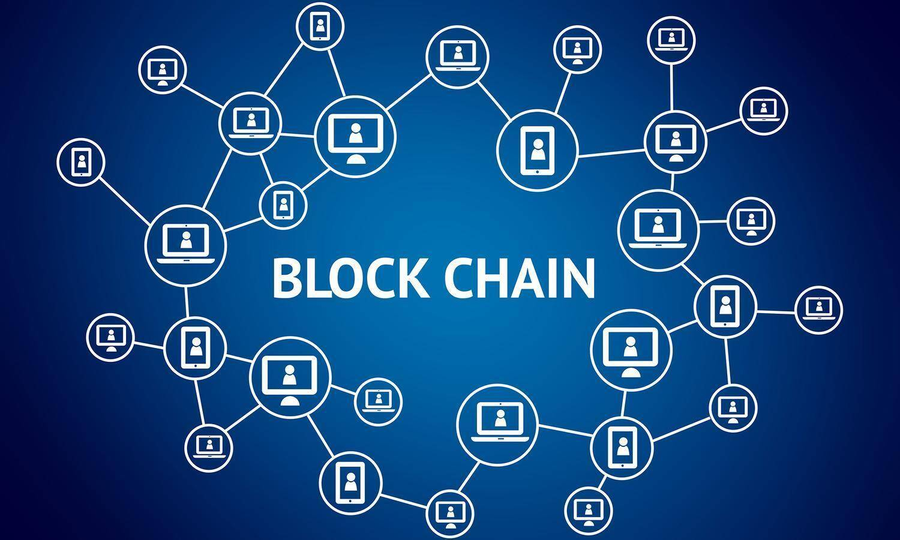
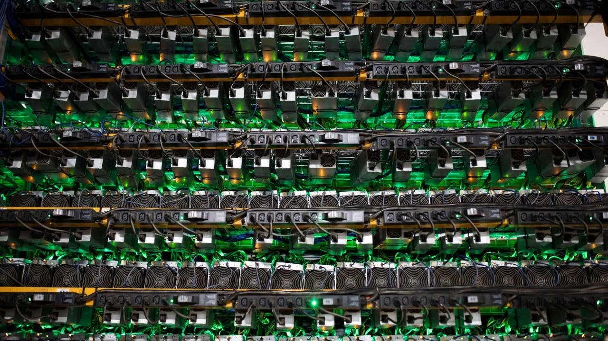

How it Works
Bitcoin is a cryptocurrency that strictly runs and relies on a blockchain. ABlockchain is a database that is shared in a computer network. It stores information from things, in this case, Bitcoin, amd makes it digital. The blockchain is a good thing to use for Bitcoin because it secures safety with user's information.
- When a person wants to start using Bitcoin, they should download the Bitcoin Wallet app to do this. They should download this app to their personal device. Doing this supports your Bitcoin account.
- Blockchains help Bitcoin Wallets calculate a person's personal balance that they are able to send and recieve Bitcoin to/from someone else. The fact that it is on a blockchain, helps verify that the person sent or recieved the Bitcoin.
- The Bitcoin Wallet keeps a piece of data. This piece of data is called "private key." This piece of data is used specifically for mathematical proof. The proof is needed to once again, verify that it is the actual owner sending from the Bitcoin wallet.
- Mining is when Bitcoin goes into a circulation.
- It also adds and verifies transactions that are recorded across the network.
- When users trade cryptocurrencies among one another, miners record the transactions on a blockchain.
- Mining is actually extremely time consuming. Without mining, users would be able to bankrupt one another (Floyd, 2021, p. 24).
- There are many different kinds of hardware that mine Bitcoin. One of these, is the Application-specific integrated circuits. Another one is graphic processing units. GPU's are more advanced because they give you more rewards. "These elaborate mining processors are known as mining rigs." (Frankenfield, 2021, p.14).
- A fun fact about mining is that the people who mine, actually get rewarded with Bitcoin. They are rewarded with half of every 210,000 blocks. In 2010, when the halving happened, each block turned into 6.25 Bitcoins (Frankenfield, 2021, p. 13).
- Halving is used because rewards from the mining will continue for an extremely long time. People say this will continue until the year of 2140.
- In mining, one Bitcoin is divisible to eight decimal places. This is equal to 100 millionths of one Bitcoin. This is actually the smallest unit of Bitcoin. People believe that Bitcoin can eventually become divisible to even more than eight decimal places (Frankenfield, 2021. p. 15).
Mining is also another system that helps confirm the transactions of Bitcoin.
These are some ways that Bitcoin work through a blockchain and mining.
 